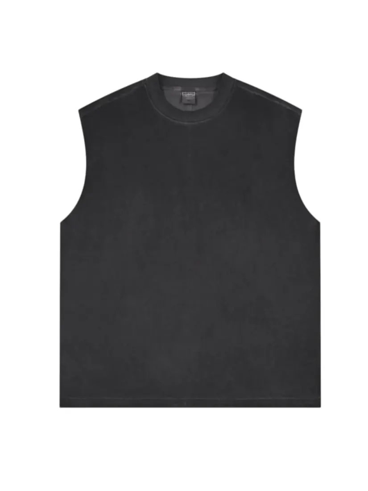
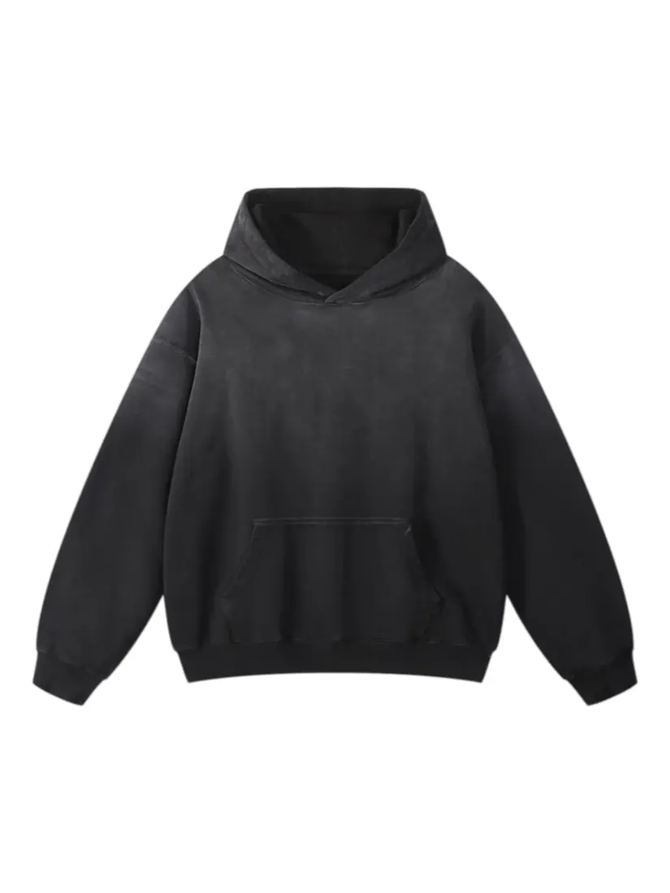
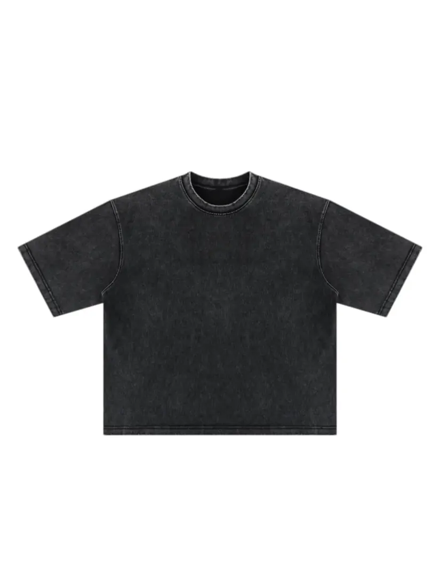

Press play to watch the process · 15 s clip · sound removed
Craftsmanship
Acid Wash
Pumice and chemical wash that strips dye unevenly, leaving a faded mottled surface.
Acid washing treats finished garments with a chemical solution and pumice stones. The stones abrade the surface while the chemistry lifts dye, so the highs come out pale and the lows keep their colour — the mottled look associated with eighties denim.
Because the result depends on stone size, wash time and how the garments are loaded, no two batches match exactly. We approve a wash panel before every run and treat the variation as part of the finish. The same family of treatments covers enzyme wash, stone wash and garment dyeing.
- Works on
- Denim, heavy twill, some fleece and jersey
- Typical use
- Vintage denim, washed hoodies, tonal streetwear
- Note
- Batch variation is inherent; panel approval required
Reference work



Want this finish on your own product? Send us your artwork and target quantity — we will come back with a costed quote and a lead time.
Request a quote